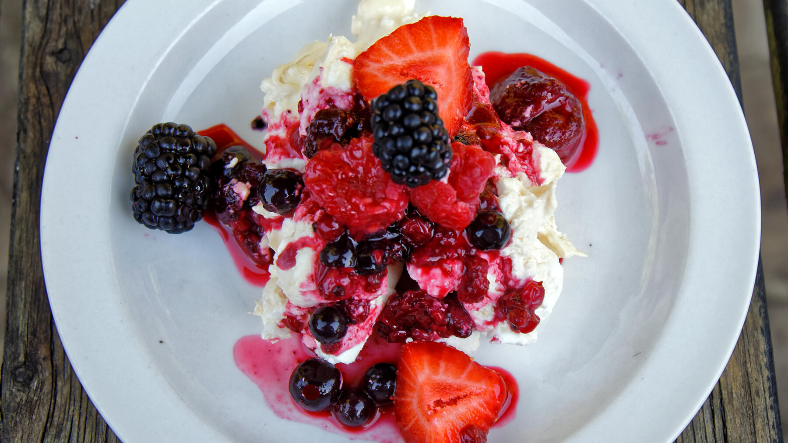

Zurück zur Übersicht
Baiser-Himbeertraum
Schichtdessert aus Quark, Sahne und Schokoküssen mit zerbröseltem Baiser und gefrorenen Himbeeren, das im Kühlschrank durchzieht.
- Zeit
- 15 Min.
- Schwierigkeit
- leicht
- Kategorie
- Nachtisch
- Ernährung
- vegetarisch
Zutaten
Portionen
- 500 gMagerquark
- 250 mlSchlagsahne (oder Cremefine zum Schlagen)
- 3 PackungenVanillezucker
- 6große Schokoküsse ohne Boden
- 500 gHimbeeren, tiefgekühlt (evtl. mit frischen Erdbeeren gemischt)
- 200 gBaiser
Zubereitung
- Die Sahne steif schlagen und beiseitestellen. Quark, Vanillezucker und Schokoküsse mit dem Mixer auf Stufe 1–2 vermischen, nicht pürieren. Dann die Sahne unterheben und noch einmal gut verrühren.
- Das Baiser in einer extra Schüssel zerbröseln, aber keinen Puderzucker daraus machen.
- In einer Schüssel ein Drittel der Quarkmischung, ein Drittel Baiser und ein Drittel der gefrorenen Himbeeren schichten und so wiederholen, bis alles aufgebraucht ist. Mit Himbeeren abschließen.
- 4 Stunden im Kühlschrank stehen lassen.
Tipp: Am selben Tag aufessen. Am nächsten Tag ist das Baiser aufgeweicht und das Dessert sieht nicht mehr schön aus.
Hinweis: Die Zeit gilt ohne die 4 Stunden im Kühlschrank.